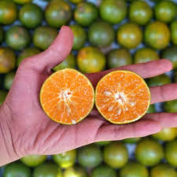

Jeruk Kaya dengan Viitamin
Pengertian :
Jeruk atau limau adalah semua tumbuhan berbunga anggota marga Citrus dari suku Rutaceae (suku jeruk-jerukan). Anggotanya berbentuk pohon dengan buah yang berdaging dengan rasa masam yang segar, meskipun banyak di antara anggotanya yang memiliki rasa manis. Rasa masam berasal dari kandungan asam sitrat yang memang menjadi terkandung pada semua anggotanya.
Nutrisi jeruk
Serat
Jeruk adalah sumber serat yang baik dan serat yang ditemukan dalam jeruk adalah pektin, selulosa, hemiselulosa, dan lignin.Serat makanan dikaitkan dengan banyak efek kesehatan yang bermanfaat, termasuk peningkatan kesehatan pencernaan, penurunan berat badan, dan kolesterol
Karbohidrat
Jeruk terutama terbuat dari karbohidrat dan air, dengan sedikit protein, lemak dan kalori. Bentuk karbohidrat yang dominan pada jeruk, seperti glukosa, fruktosa, dan sukrosa yang bertanggung jawab atas rasa manis pada buah jeruk.